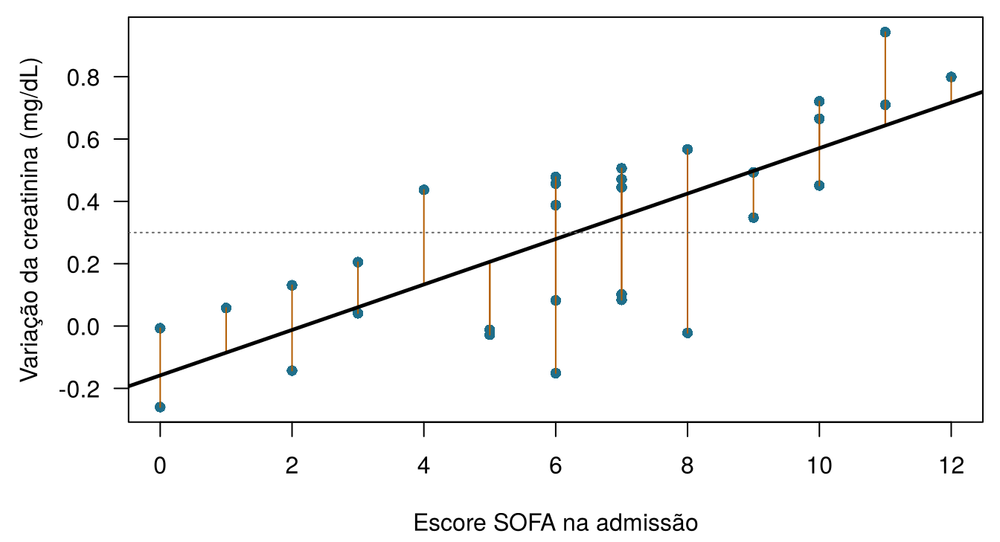
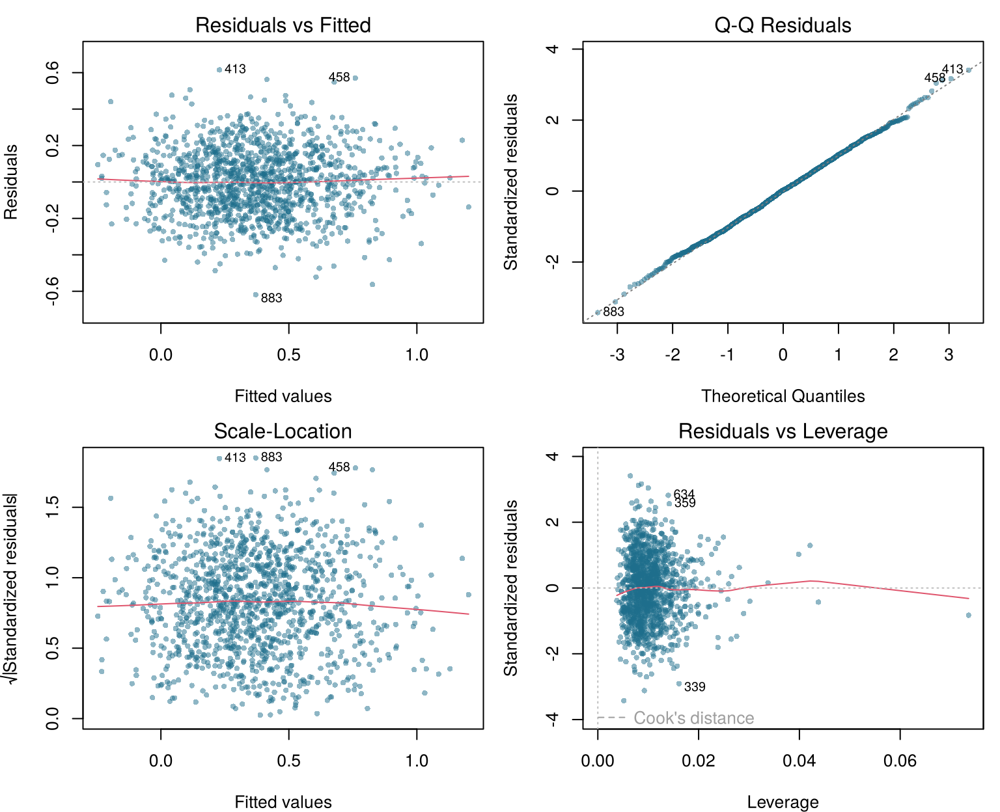
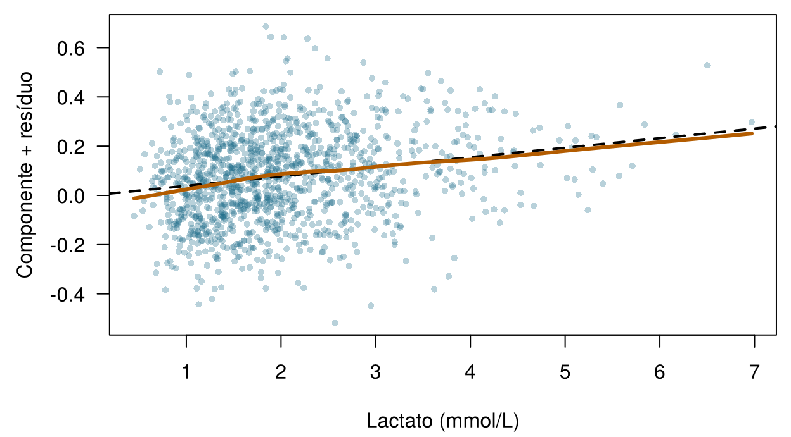
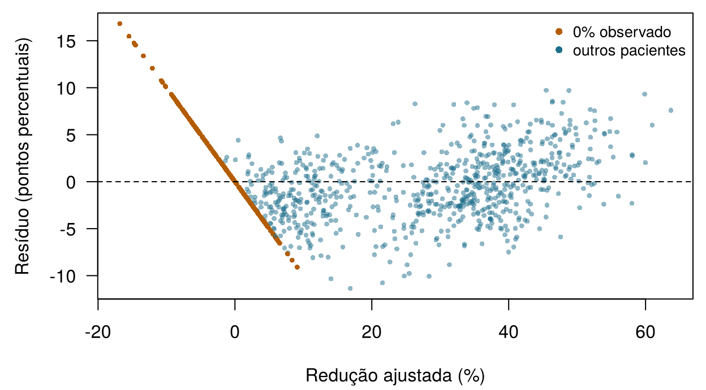

4 Modelos lineares e regularização
Quatro perguntas para aquecer. Arrisque seu melhor palpite; o capítulo explica cada uma.
| Pergunta | Sua resposta |
|---|---|
| A reta de Emma é variação prevista = −0,06 + 0,06 × SOFA. Quanto ela prevê, em mg/dL, para um paciente com SOFA 10? | |
| A creatinina de um paciente aumentou, de fato, 0,50 mg/dL; a reta previa 0,30. Qual é a diferença observado − previsto? | |
| Se você acrescenta preditores a um modelo ajustado por mínimos quadrados, o erro nos dados de treino… | |
| Penalizar coeficientes grandes para que um modelo com milhares de genes não sofra sobreajuste chama-se… |
Como usar este capítulo
Começando por aqui?
Este capítulo toma emprestadas algumas ideias de capítulos anteriores. Em uma linha cada:
- Modelo e erro. Um modelo estatístico escreve um desfecho como \(y = f(\mathbf{x}) + \varepsilon\): uma parte sistemática \(f\) dos atributos mais um erro \(\varepsilon\); um modelo ajustado é \(\hat f\) e sua predição é \(\hat y\) (Seção 1.4). Cada linha é uma instância, cada coluna um atributo; há \(n\) instâncias e \(p\) preditores (Definição 1.7).
- Avaliação honesta. Os modelos são ajustados em um conjunto de treino e julgados em um conjunto de teste que nunca viram; um modelo flexível demais sofre sobreajuste (Seção 1.8, Definição 1.8).
- Do Capítulo 3. As métricas de regressão MAE e RMSE (erro médio nas unidades do desfecho; o RMSE pune mais os erros grandes) e o \(R^2\) (a fração da variância do desfecho que o modelo explica); a validação cruzada em \(V\) partes (folds); um hiperparâmetro é uma configuração escolhida por validação cruzada, e não ajustada diretamente; vazamento de dados (leakage) é informação sobre o desfecho que se infiltra nos preditores. No ONCO-1, os genes 08, 14 e 19 são cópias do desfecho com vazamento e ficam fora de todos os modelos deste capítulo.
- Do Capítulo 2. A distribuição normal e a ideia de verossimilhança.
| Exemplo | Quem ou o quê | Desfecho | Rostos que você vai conhecer |
|---|---|---|---|
| 1 UTI Ala 7 | 1.250 pacientes de UTI em 4 hospitais | variação da creatinina em 48 h (lesão renal aguda se ≥ 0,3 mg/dL) | Aoife (71 anos, sepse, risco limítrofe), Tomás (54 anos, risco baixo), Priya (38 anos, risco alto); a Dra. Emma Walsh; Seán, o farmacêutico |
| 2 Ensaio ONCO-1 | 1.000 pacientes randomizados para quimioterapia ou não | redução do tumor (%) | pacientes #0042 e #0917 |
| 3 HomeBeat | 500 pessoas que usam um relógio inteligente em casa | escore de estresse, evento de deterioração | Lena |
| 4 CellWorks | 420 lotes de produção de uma terapia celular | escore de potência | lote CW-118 |
Os quatro conjuntos de dados são simulados e podem ser baixados no apêndice de dados. A apresentação completa está na Seção 1.1.
Este capítulo constrói o modelo linear desde o início e depois o ensina a ter moderação. Ele tem dez seções e um Lab, sete verificações rápidas, dois widgets “Experimente”, um desafio de associação e três missões de programação em R e Python. Reserve cerca de 100 minutos. A matemática é apresentada uma linha de cada vez; se uma fórmula parecer densa, leia a frase seguinte, que sempre diz a mesma coisa em palavras.
Notação em resumo (apenas para consulta)
| Símbolo | Significado | Seção |
|---|---|---|
| \(\beta_0\), \(\beta_j\) | intercepto e coeficiente do preditor \(j\) | Seção 4.1 |
| \(\hat\beta_j\) | coeficiente estimado (“chapéu” = estimado a partir dos dados) | Seção 4.1 |
| \(e_i = y_i - \hat y_i\) | resíduo da instância \(i\) | Seção 4.1 |
| RSS | soma dos quadrados dos resíduos, \(\sum_i e_i^2\) | Seção 4.1 |
| \(\mathbf{X}\), \(\mathbf{\beta}\) | matriz de delineamento (\(n\) linhas, uma coluna por coeficiente) e vetor de coeficientes | Seção 4.2 |
| \(h_{ii}\) | alavancagem da instância \(i\) | Seção 4.5 |
| \(D_i\) | distância de Cook da instância \(i\) | Seção 4.5 |
| \(\lambda\) | intensidade da penalização (um hiperparâmetro) | Seção 4.7 |
| \(\alpha\) | parâmetro de mistura da elastic net, de 0 (ridge) a 1 (lasso) | Seção 4.7 |
A lista completa está na página de notação.
4.1 De uma reta aos mínimos quadrados
No Capítulo 1, você moveu dois controles deslizantes até que sua reta através dos dados da UTI Ala 7 tivesse um erro pequeno. Um computador faz a mesma coisa, mas precisa de uma regra precisa para “pequeno”. A regra usada pelo modelo linear tem dois séculos (Stigler 1981) e ainda é o padrão em todos os pacotes estatísticos.
Para um preditor \(x\) (digamos, o SOFA) e um desfecho \(y\) (a variação da creatinina), o modelo de regressão linear simples é
\[ y_i = \beta_0 + \beta_1 x_i + \varepsilon_i , \qquad i = 1, \dots, n , \qquad(4.1)\]
em que \(\beta_0\) (beta zero) é o intercepto, o desfecho previsto quando \(x = 0\), e \(\beta_1\) é a inclinação, a variação do desfecho previsto para cada aumento de uma unidade em \(x\). Depois que os coeficientes são estimados a partir dos dados, eles ganham chapéus, e a predição para o paciente \(i\) é \(\hat y_i = \hat\beta_0 + \hat\beta_1 x_i\).
Definição 4.1 (Regressão linear) Um modelo de regressão linear escreve o desfecho como um intercepto mais uma soma ponderada dos preditores mais um erro: \(y = \beta_0 + \beta_1 x_1 + \dots + \beta_p x_p + \varepsilon\). Os pesos \(\beta_j\) são os coeficientes. “Linear” refere-se aos coeficientes, não aos preditores: um modelo que contém \(x^2\) ou \(\log x\) continua sendo linear, porque cada coeficiente multiplica algo conhecido e os termos são somados.
Como o computador deve escolher \(\beta_0\) e \(\beta_1\)? Para qualquer reta candidata, cada paciente tem um resíduo, a distância vertical entre o que aconteceu e o que a reta prevê (Figura 4.1). Os mínimos quadrados escolhem a reta cujos resíduos são, em um sentido preciso, os menores possíveis.
Definição 4.2 (Resíduo e mínimos quadrados) O resíduo da instância \(i\) é \(e_i = y_i - \hat y_i\), observado menos previsto. A soma dos quadrados dos resíduos é \(\text{RSS} = \sum_{i=1}^n e_i^2\). Os mínimos quadrados ordinários (OLS, do inglês ordinary least squares) estimam os coeficientes como os valores que tornam a RSS a menor possível.
Por que quadrados, e não as distâncias absolutas que você minimizou no Capítulo 1? Por três razões. Os quadrados dão um critério suave, com um único mínimo que pode ser encontrado exatamente, com uma fórmula, em vez de por tentativa e erro. Eles punem mais os erros grandes do que os pequenos, o que muitas vezes é o que queremos quando um erro grande é clinicamente pior. E, se os erros seguem uma distribuição normal, a reta de mínimos quadrados é também a reta de máxima verossimilhança (Capítulo 2). Para um único preditor, a fórmula é curta:
\[ \hat\beta_1 = \frac{\sum_{i}(x_i - \bar x)(y_i - \bar y)}{\sum_{i}(x_i - \bar x)^2}, \qquad \hat\beta_0 = \bar y - \hat\beta_1 \bar x , \qquad(4.2)\]
em que \(\bar x\) e \(\bar y\) são as médias. Em palavras: a inclinação mede o quanto \(x\) e \(y\) variam juntos, em relação ao quanto \(x\) varia sozinho, e a reta sempre passa pelo ponto das médias \((\bar x, \bar y)\) (James et al. 2021, ch. 3).
Com todos os 1.250 pacientes da UTI Ala 7, os mínimos quadrados dão \(\hat y = -0,056 + 0,060 \times \text{SOFA}\): cada ponto a mais de SOFA está associado a um aumento da creatinina cerca de 0,06 mg/dL maior. Esses são os números, arredondados, que aparecem nas perguntas de aquecimento. Todos os métodos deste livro executam o ciclo de aprendizado do Capítulo 1 (chutar, avaliar, ajustar, repetir); para os mínimos quadrados, o ciclo tem um atalho, porque a Equação 4.2 salta diretamente para a melhor reta.
Duas analistas ajustam uma reta aos mesmos dados da UTI Ala 7. A analista A minimiza a soma dos resíduos absolutos; a analista B minimiza a soma dos quadrados dos resíduos. Qual afirmação é verdadeira?
4.2 Muitos preditores: regressão linear múltipla
A pergunta de Seán precisa de mais do que o SOFA. A regressão linear múltipla usa todas as medidas de admissão ao mesmo tempo. Para a UTI Ala 7, escrevendo cada variável com o seu nome no conjunto de dados,
\[ \begin{aligned} &\mathtt{delta\_creatinine\_48h} \\ &\quad = \beta_0 + \beta_1\,\mathtt{ICU\_B} + \beta_2\,\mathtt{ICU\_C} + \beta_3\,\mathtt{ICU\_D} \\ &\quad + \beta_4\,\mathtt{age} + \beta_5\,\mathtt{sofa} + \beta_6\,\mathtt{lactate} \\ &\quad + \beta_7\,\mathtt{map\_min} + \beta_8\,\mathtt{baseline\_creat} \\ &\quad + \beta_9\,\mathtt{protocol\_adherence} + \beta_{10}\,\mathtt{bun} \\ &\quad + \beta_{11}\,\mathtt{crp} + \beta_{12}\,\mathtt{albumin} + \varepsilon . \end{aligned} \qquad(4.3)\]
patient_id fica de fora (ele identifica uma linha e não traz nenhuma informação sobre o paciente), assim como o próprio desfecho.
4.2.1 Categorias viram colunas: codificação por variáveis indicadoras
site é categórica: ICU_A, ICU_B, ICU_C ou ICU_D. Um coeficiente multiplica um número, então as quatro unidades são transformadas em três colunas 0/1, chamadas variáveis indicadoras (ou dummy): ICU_B vale 1 para os pacientes tratados na ICU_B e 0 caso contrário, e o mesmo vale para ICU_C e ICU_D. A ICU_A, que não tem coluna, é o nível de referência: seus pacientes têm 0 nas três colunas. O coeficiente de ICU_C é, então, a diferença entre a ICU_C e a ICU_A para pacientes iguais em todo o resto. É preciso uma coluna a menos do que o número de categorias, porque uma quarta coluna seria previsível a partir das outras três (valeria 1 exatamente quando todas elas valem 0).
Definição 4.3 (Matriz de delineamento e variáveis indicadoras) A matriz de delineamento \(\mathbf{X}\) tem uma linha por instância e uma coluna por coeficiente: uma coluna de 1s para o intercepto, uma coluna para cada preditor numérico e \(k-1\) colunas indicadoras (0/1) para um preditor categórico com \(k\) níveis, com um dos níveis servindo de referência. O modelo passa a ser \(\mathbf{y} = \mathbf{X}\mathbf{\beta} + \mathbf{\varepsilon}\).
Na forma matricial, a estimativa de mínimos quadrados tem uma famosa forma fechada, a solução das chamadas equações normais (James et al. 2021, cap. 3; Hastie, Tibshirani, e Friedman 2009, cap. 3):
\[ \hat{\mathbf{\beta}} = (\mathbf{X}^\top\mathbf{X})^{-1}\mathbf{X}^\top\mathbf{y} . \qquad(4.4)\]
Você não vai precisar calculá-la à mão. Vale a pena saber duas coisas sobre ela. Primeiro, ela só existe se nenhuma coluna de \(\mathbf{X}\) for uma combinação exata das outras e se houver mais linhas do que colunas; voltaremos a isso quando as colunas forem 2.000 genes. Segundo, o mesmo delineamento deve ser usado nos dados de treino e de teste: as mesmas colunas indicadoras, na mesma ordem, com o mesmo nível de referência. Em R, model.matrix() construída a partir da fórmula dos dados de treino garante isso; em Python, fixe as categorias antes de chamar pd.get_dummies() (McKinney 2010). Um paciente de teste de uma unidade sem nenhum paciente de treino não teria coluna em que entrar.
4.2.2 Lendo os coeficientes
A Tabela 4.1 mostra o modelo ajustado. Como a UTI Ala 7 é simulada, podemos fazer algo impossível com dados reais: colocar cada estimativa ao lado do valor verdadeiro usado para gerar os dados.
| Termo | Unidade | Estimativa | IC de 95% | Valor na simulação |
|---|---|---|---|---|
| (Intercept) | n/d | 0.38 | 0.252 a 0.507 | n/d |
| siteICU_B | vs ICU_A | 0.00681 | -0.0219 a 0.0355 | 0.03 |
| siteICU_C | vs ICU_A | 0.0741 | 0.0454 a 0.103 | 0.09 |
| siteICU_D | vs ICU_A | 0.134 | 0.105 a 0.163 | 0.13 |
| age | por ano | -0.0000761 | -0.000802 a 0.00065 | 0 |
| sofa | por ponto | 0.0415 | 0.0372 a 0.0458 | 0.04 |
| lactate | por mmol/L | 0.0387 | 0.0279 a 0.0495 | 0.10 × log(lactate + 0.1) |
| map_min | por mmHg | -0.00631 | -0.00731 a -0.0053 | -0.006 |
| baseline_creat | por mg/dL | 0.231 | 0.201 a 0.261 | 0.22 |
| protocol_adherence | por 1,0 (0 → 100%) | -0.292 | -0.351 a -0.234 | -0.28 |
| bun | por mg/dL | 0.0025 | 0.00122 a 0.00378 | 0.0035 |
| crp | por mg/L | 0.00127 | 0.000986 a 0.00155 | 0.0012 |
| albumin | por g/dL | -0.075 | -0.0965 a -0.0534 | -0.08 |
Cada coeficiente responde à pergunta “quanto difere a variação prevista da creatinina entre dois pacientes que diferem em uma unidade neste preditor e são iguais em todos os outros?”
Definição 4.4 (Interpretando um coeficiente) Em uma regressão linear múltipla, \(\beta_j\) é a diferença esperada no desfecho entre duas instâncias que diferem em uma unidade em \(x_j\) e têm os mesmos valores em todos os outros preditores do modelo. Sua magnitude depende das unidades de \(x_j\); seu significado depende de quais outros preditores estão no modelo. Ele descreve uma associação: só é um efeito causal sob pressupostos adicionais.
Leia três linhas com essa frase em mente.
- Creatinina basal. Dois pacientes com o mesmo SOFA, lactato, pressão arterial e assim por diante, mas com creatinina basal diferindo em 1 mg/dL, têm aumentos em 48 horas previstos com uma diferença de 0,23 mg/dL (intervalo de confiança de 95% 0,20 a 0,26). A simulação usou 0,22.
- Idade. A estimativa é -0,00008 por ano, essencialmente zero, como na simulação. Na vida real a idade importa para os rins, mas aqui a sua influência passa pela creatinina basal, que já está no modelo.
- Albumina, a pergunta de Seán. Cada g/dL a mais de albumina está associado a um aumento 0,075 mg/dL menor. Isso significa que uma infusão de albumina protegeria os rins de Aoife? Não com base neste modelo. No Capítulo 1 você viu que a gravidade confunde a adesão ao protocolo; a albumina baixa também é um marcador de gravidade e inflamação (Soeters, Wolfe, e Shenkin 2019). Um coeficiente diz como pacientes que por acaso diferem na albumina diferem no desfecho, e não o que aconteceria se você mudasse a albumina (Hernán e Robins 2020). O Capítulo 13 é dedicado a essa segunda pergunta.
Coeficientes em unidades diferentes não podem ser comparados diretamente: 0,04 por ponto de SOFA e 0,0013 por mg/L de PCR não dizem nada sobre qual variável importa mais, porque a PCR de um paciente típico varia em dezenas de mg/L. Se você quiser compará-los, padronize os preditores antes (subtraia a média e divida pelo desvio-padrão), de modo que cada coeficiente seja “por desvio-padrão”. Padronizaremos todos os preditores antes de regularizá-los na Seção 4.7.
4.2.3 Os pacientes desta noite
O modelo ajustado dá uma predição para cada um dos pacientes desta noite, com um intervalo de predição de 95%: uma faixa que deveria conter o desfecho de um novo paciente como este 95 vezes em 100, se os pressupostos do modelo forem válidos. Para ser comparado com outros modelos, um modelo deve ser ajustado apenas nos pacientes de treino; por isso a Tabela 4.2 usa a mesma fórmula reajustada nos 1.000 pacientes de treino da divisão compartilhada; os coeficientes quase não mudam.
| Paciente | Previsto | Intervalo de predição de 95% |
|---|---|---|
| Aoife Byrne | 0.30 | -0.06 a 0.66 |
| Tomás Ruiz | -0.15 | -0.51 a 0.21 |
| Priya Nair | 1.19 | 0.83 a 1.56 |
A predição de Aoife, 0,30 mg/dL, continua próxima do limiar de LRA de 0,3, e o intervalo dela se estende pelos dois lados desse limiar. O modelo é mais útil para Tomás (Tomás Ruiz, 54 anos, o paciente de baixo risco) e para Priya (Priya Nair, 38 anos, muito grave), cujos intervalos ficam inteiramente de um só lado. Um único número esconde essa diferença; o Capítulo 5 transforma predições em probabilidades de LRA, e o Capítulo 8 torna a incerteza explícita.
Na Tabela 4.1, o coeficiente de siteICU_D é de cerca de 0,13. O que ele significa?
Ajuste sua primeira regressão múltipla. Os dados da UTI Ala 7 estão carregados como icu. Em R, o código ajusta com lm() um modelo linear de delta_creatinine_48h em função de sofa, map_min e baseline_creat; preencha a lacuna para extrair o coeficiente de baseline_creat. Em Python, preencha a lacuna com o solucionador de mínimos quadrados do numpy (Harris et al. 2020). Como o coeficiente se compara com o valor da Tabela 4.1, que veio de um modelo com mais preditores?
lm() (abreviação de linear model, modelo linear) ajustou o modelo; coef() devolve os coeficientes dele, nomeados de acordo com os preditores. Escolha um escrevendo o nome dele entre as aspas.
coef(fit)["baseline_creat"]O solucionador de mínimos quadrados do numpy é np.linalg.lstsq.
beta, *_ = np.linalg.lstsq(X, y, rcond=None)4.3 Lendo a saída: incerteza, valores-p e ANOVA
Em R, summary() imprime o relatório clássico de regressão (aqui resumido às primeiras linhas da tabela de coeficientes).
summary(fit_w7) Estimate Std. Error t value Pr(>|t|)
(Intercept) 0.3796 0.0651 5.8285 0.0000
siteICU_B 0.0068 0.0146 0.4652 0.6419
age -0.0001 0.0004 -0.2057 0.8371
sofa 0.0415 0.0022 18.7489 0.0000
albumin -0.0750 0.0110 -6.8279 0.0000
Residual standard error: 0.181 on 1237 degrees of freedom
Multiple R-squared: 0.641, Adjusted R-squared: 0.638
F-statistic: 184.4 on 12 and 1237 DF, p-value < 2.2e-16Cada linha dá a estimativa, o seu erro-padrão (o quanto a estimativa variaria de uma amostra para outra), o valor t (estimativa dividida pelo erro-padrão) e um valor-p. Abaixo da tabela: o erro-padrão residual (residual standard error), cerca de 0,18 mg/dL, é o tamanho típico de um resíduo; \(R^2 = 0,64\) diz que o modelo explica cerca de 64% da variação do desfecho (nos dados de treino, portanto de forma otimista; Capítulo 3); o \(R^2\) ajustado aplica uma pequena penalização pelo número de preditores; e o teste F pergunta se os preditores, tomados em conjunto, explicam alguma coisa.
Definição 4.5 (Intervalo de confiança e valor-p (em resumo)) Um intervalo de confiança de 95% para \(\beta_j\) é uma faixa calculada de modo que, em muitas repetições do estudo, 95% dessas faixas conteriam o valor verdadeiro. O valor-p de \(\beta_j\) é a probabilidade de obter uma estimativa pelo menos tão distante de zero quanto a observada, se o coeficiente verdadeiro fosse zero e os pressupostos do modelo fossem válidos.
Um valor-p é fácil de interpretar mal (Wasserstein e Lazar 2016). Ele não é a probabilidade de o preditor não ter efeito, e não mede o quão grande ou importante é uma associação. Com 1.250 pacientes, uma associação minúscula pode ter um valor-p ínfimo; com 30 pacientes, uma associação grande e clinicamente importante pode não ter. O intervalo de confiança costuma ser mais informativo, porque mostra tanto o tamanho da associação quanto a sua incerteza, nas próprias unidades do desfecho. Quando um modelo tem milhares de preditores, alguns terão valores-p pequenos só por acaso; para essa situação existem procedimentos que controlam a taxa de falsas descobertas (Benjamini e Hochberg 1995), e a regularização, mais adiante neste capítulo, oferece outro caminho.
4.3.1 ANOVA: a ordem das perguntas importa
Uma tabela de análise de variância (ANOVA) divide a variação explicada pelo modelo nas contribuições de cada preditor, com um teste F para cada uma. A função anova() do R faz isso de forma sequencial: cada preditor recebe o crédito pelo que explica depois dos preditores listados antes dele e antes dos listados depois. Por isso, a ordem da fórmula muda a resposta.
Na UTI Ala 7, o efeito é impressionante. Com age listada em segundo lugar, como na Equação 4.3, a ANOVA sequencial dá à idade um valor-p de 0,00014. Testar a idade por último, depois de todos os outros preditores, com drop1(fit, test = "F"), dá 0,84. Ambas são respostas corretas para perguntas diferentes. A primeira pergunta “a idade explica alguma coisa, ignorando tudo o que vem depois dela na fórmula?”, e explica, porque pacientes mais velhos têm creatinina basal mais alta. A segunda pergunta “a idade acrescenta alguma coisa quando a creatinina basal e o resto já são conhecidos?”, e não acrescenta. Quando não há uma ordem natural entre os preditores, use os testes “cada termo por último” (drop1() no R base, ou Anova() do pacote car (Fox e Weisberg 2019)), que coincidem com os testes t da tabela de resumo para preditores numéricos.
Para albumin, a tabela de resumo informa \(p < 0.001\). Qual interpretação está correta?
4.4 Seis pressupostos
Os números da Tabela 4.1 só são confiáveis se o modelo for uma representação razoável dos dados. A regressão linear se apoia em seis pressupostos; a Figura 4.2 mostra a aparência de cada um quando é válido e quando falha.
![Doze pequenos painéis em seis pares. Linearidade: uma nuvem reta versus uma nuvem curva. Independência: resíduos espalhados ao acaso ao longo do tempo versus resíduos que vagueiam em longas sequências. Variância constante: uma faixa uniforme versus um funil. Normalidade: um gráfico Q-Q sobre a reta versus um que se afasta dela na cauda superior. Colinearidade: dois preditores não relacionados versus dois quase perfeitamente correlacionados. Pontos influentes: uma reta através de uma nuvem versus uma reta puxada para baixo por um ponto extremo.](ch04.pt_files/figure-html/fig-ch04-assumptions-1.png)
- Linearidade. O desfecho médio varia linearmente com cada preditor (na escala usada no modelo). Se a relação verdadeira for curva, o modelo erra sistematicamente em algumas regiões. Verificação: os resíduos em função dos valores ajustados, ou de cada preditor, não devem mostrar curvatura. Solução: transformar um preditor (log, quadrado), acrescentar um spline ou usar um modelo mais flexível (Capítulos 6 e 7).
- Independência dos erros. O resíduo de um paciente não diz nada sobre o resíduo de outro. Esse pressuposto falha com medidas repetidas do mesmo paciente, com pacientes agrupados em hospitais ou com dados coletados ao longo do tempo. Consequência: os erros-padrão ficam pequenos demais e os valores-p, otimistas demais. Verificação: representar os resíduos em ordem temporal ou por agrupamento. Solução: modelos para dados agrupados ou longitudinais.
- Variância constante (homocedasticidade). A dispersão dos resíduos é a mesma ao longo de toda a faixa de valores ajustados. Uma forma de funil é heterocedasticidade. Verificação: gráfico dos resíduos ou gráfico escala–locação; existe um teste formal (Breusch e Pagan 1979). Solução: transformar o desfecho, usar mínimos quadrados ponderados ou erros-padrão robustos (“sanduíche”) (White 1980).
- Normalidade dos erros. Os erros seguem uma distribuição normal. Isso importa para valores-p e intervalos exatos em amostras pequenas, e para os intervalos de predição; importa pouco para as próprias estimativas ou, em amostras grandes, para os intervalos de confiança. Verificação: um gráfico Q–Q, no qual os pontos devem seguir a reta.
- Ausência de colinearidade (grave). Os preditores não são relacionados entre si de forma forte demais. Com preditores muito correlacionados, o modelo não consegue separar as suas contribuições, de modo que os coeficientes individuais se tornam instáveis e os seus erros-padrão grandes, ainda que as predições possam continuar boas. Verificação: correlações e o fator de inflação da variância (Seção 4.5). Solução: remover ou combinar preditores, ou regularizar (Seção 4.7). A colinearidade volta no Capítulo 10.
- Ausência de pontos excessivamente influentes. Nenhum paciente sozinho determina o ajuste. Verificação: alavancagem e distância de Cook (Seção 4.5). Solução: primeiro, verificar se há erros no registro; nunca excluir um paciente simplesmente porque ele é inconveniente.
Nem todos os pressupostos importam para todos os propósitos (Tabela 4.3). Sob os três primeiros pressupostos, mais a ausência de colinearidade exata, as estimativas de mínimos quadrados são não viesadas e têm a menor variância entre os estimadores lineares não viesados, um resultado conhecido como teorema de Gauss–Markov; a normalidade é o pressuposto adicional por trás dos valores-p e intervalos exatos em amostras pequenas (James et al. 2021, ch. 3; Hastie, Tibshirani, e Friedman 2009, ch. 3).
| Pressuposto | Coeficientes e predições | Erros-padrão, valores-p, intervalos de confiança | Intervalos de predição |
|---|---|---|---|
| Linearidade | essencial | essencial | essencial |
| Independência | em geral, sem problema | essencial | importante |
| Variância constante | sem problema | importante | essencial |
| Normalidade | sem problema | só em amostras pequenas | importante |
| Ausência de colinearidade grave | predições sem problema; coeficientes individuais instáveis | importante | sem problema |
| Ausência de pontos influentes | importante | importante | importante |
Uma equipe constrói um modelo linear com 1.250 pacientes apenas para prever a variação da creatinina, e vai julgá-lo pelo erro em um conjunto de teste separado. Com qual pressuposto ela pode se preocupar menos?
4.5 Diagnóstico: verificando o modelo da UTI Ala 7
Em R, plot() aplicado a um modelo linear ajustado desenha quatro gráficos de diagnóstico padrão (Figura 4.3).

Leia-os um de cada vez.
- Resíduos vs ajustados. Uma faixa uniforme em torno de zero, com uma linha de tendência plana: nenhum sinal de relação curva no conjunto, e nenhum funil.
- Q–Q normal. Os pontos seguem a diagonal quase perfeitamente; o pressuposto de normalidade é razoável.
- Escala–locação. A linha de tendência é quase plana: a dispersão dos resíduos é mais ou menos a mesma para aumentos previstos pequenos e grandes.
- Resíduos vs alavancagem. Todos os pacientes têm alavancagem baixa, e a maior distância de Cook é 0,011, muito abaixo da curva de 0,5 que o R desenha quando um paciente se aproxima dela.
Esses gráficos olham para o modelo como um todo e podem esconder um problema com um único preditor. Um gráfico de componente mais resíduo mostra, para um preditor, a sua contribuição ajustada mais os resíduos (Fox e Weisberg 2019). Para o lactato, ele se curva (Figura 4.4): o desfecho sobe acentuadamente com lactato baixo e mais devagar com lactato alto. É exatamente assim que os dados foram gerados, com \(\log(\text{lactato})\). Substituir lactate por log(lactate) eleva o \(R^2\) ajustado apenas de 0,638 para 0,638: uma melhora real, mas pequena, o que é típico.

4.5.1 Alavancagem, outliers e influência
Nem todo paciente incomum é um problema, e as três palavras usadas para eles significam coisas diferentes.
Definição 4.6 (Alavancagem, outlier e distância de Cook) Uma instância tem alavancagem \(h_{ii}\) alta quando os seus valores dos preditores estão longe dos das outras instâncias: ela poderia puxar a reta com força. Um outlier (valor atípico) é uma instância com um resíduo grande: o modelo a ajusta mal. Uma instância é influente quando removê-la mudaria visivelmente os coeficientes ajustados. A distância de Cook \(D_i\) combina os dois ingredientes, \[ D_i = \frac{e_i^2}{(p+1)\,s^2}\cdot\frac{h_{ii}}{(1-h_{ii})^2}, \] em que \(s^2\) é a variância residual e \(p+1\) o número de coeficientes (Cook 1977).
Um paciente com alavancagem alta que está sobre a reta é inofensivo; um outlier com valores médios dos preditores desloca a reta só um pouco; é a combinação das duas coisas que torna um ponto influente (Belsley, Kuh, e Welsch 1980). Regras práticas comuns sinalizam, para um exame mais atento, alavancagem acima de \(2(p+1)/n\) e distância de Cook acima de \(4/n\), e tratam \(D_i > 1\) como um alerta sério (Fox e Weisberg 2019). São sinalizações, não veredictos: a resposta certa é verificar o registro (um erro de digitação em um valor laboratorial?) e relatar se as conclusões mudam sem o paciente, e não excluí-lo discretamente. Na UTI Ala 7, 63 pacientes ultrapassam a sinalização de \(4/n\), como seria de esperar por acaso em 1.250, e nenhum chega perto de 1.
Para a colinearidade, o fator de inflação da variância (VIF, do inglês variance inflation factor) do preditor \(j\) é \(\text{VIF}_j = 1/(1-R_j^2)\), em que \(R_j^2\) é o \(R^2\) de uma regressão de \(x_j\) em todos os outros preditores. Ele diz quantas vezes a variância de \(\hat\beta_j\) é maior do que seria se \(x_j\) não tivesse relação com os outros preditores; valores acima de 5 ou 10 costumam ser vistos como sinal de problema (James et al. 2021, ch. 3). Na UTI Ala 7, o maior VIF é 1,71, de sofa: nenhuma preocupação.
Arraste um paciente. Os pontos são 30 pacientes da UTI Ala 7. O paciente vermelho pode ser arrastado para qualquer lugar. A linha contínua é o ajuste de mínimos quadrados com o paciente vermelho; a tracejada, sem ele. Observe a alavancagem, o resíduo padronizado e a distância de Cook. Use os botões para três casos clássicos. Meta: tornar o paciente vermelho influente, com distância de Cook acima de 1.
Três lições do widget. Um paciente com resíduo grande perto do meio da faixa de SOFA quase não inclina a reta, porque há muitos vizinhos para mantê-la no lugar. Um paciente com SOFA extremo que concorda com os outros não muda nada. Só a combinação, extremo e discordante, arrasta a reta, e aí ela pode inverter a conclusão de um estudo pequeno. Em dados reais, um ponto assim muitas vezes é um erro de registro, ou um paciente diferente de todos os outros, para quem, de qualquer forma, não se deveria confiar no modelo.
Um conjunto de dados de 200 pacientes de UTI inclui uma jovem de 19 anos; todos os outros têm mais de 45. O desfecho dela é quase exatamente o que a reta ajustada prevê. Qual descrição se aplica a ela?
Caça aos pacientes influentes. Ajuste o modelo da UTI Ala 7 com os oito preditores numéricos e conte quantos pacientes têm uma distância de Cook acima da sinalização de \(4/n\).
A sinalização é \(4/n\): coloque 4 na lacuna.
sum(cd > 4 / nrow(icu))A sinalização é \(4/n\): coloque 4 na lacuna.
int((cooks > 4 / len(y)).sum())4.5.2 Qual pressuposto falha?
Os gráficos de diagnóstico são uma habilidade do olhar, e o olhar melhora com a prática. Os seis painéis da Figura 4.5 vêm de seis modelos diferentes, cada um com um problema.
![Painel A: um gráfico Q–Q normal cujos pontos se curvam para cima, acima da reta, na extremidade direita. Painel B: resíduos em função dos valores ajustados abrindo-se como um funil. Painel C: resíduos em função da alavancagem, com um ponto de alavancagem muito alta e um resíduo negativo grande, além da curva de distância de Cook igual a 1. Painel D: resíduos em função dos valores ajustados formando um U. Painel E: resíduos representados por dia de internação, vagueando acima de zero por semanas e depois abaixo de zero. Painel F: peso corporal em função do índice de massa corporal, quase sobre uma reta.](ch04.pt_files/figure-html/fig-ch04-which-1.png)
Associe cada painel da Figura 4.5 ao pressuposto que falha.
- Painel A: gráfico Q–Q dos resíduos de um modelo de custos hospitalares. Normalidade
- Painel B: resíduos de um modelo de tempo de internação. Variância constante
- Painel C: resíduos em função da alavancagem em um pequeno estudo de determinação de dose. Sem pontos influentes
- Painel D: resíduos de um modelo de glicemia em função da idade. Linearidade
- Painel E: resíduos de um modelo no nível da unidade, representados por dia de internação ao longo de cinco meses. Independência
- Painel F: dois preditores do mesmo modelo. Sem colinearidade
4.6 Quando os preditores se acumulam: ONCO-1
Agora vamos ao ensaio ONCO-1. O ensaio randomizou pacientes com tumores sólidos para quimioterapia ou nenhuma quimioterapia e mediu, para cada um, a redução do tumor (response_percent), algumas variáveis clínicas e a expressão de 2.000 genes. A versão dos dados para o navegador tem 1.000 pacientes e os primeiros 50 genes. Escrito com os nomes do conjunto de dados, o modelo linear para o ensaio completo é
\[ \begin{aligned} &\mathtt{response\_percent} \\ &\quad = \beta_0 + \beta_1\,\mathtt{treatment\_chemo} + \beta_2\,\mathtt{dose\_intensity} \\ &\quad + \beta_3\,\mathtt{patient\_age} + \beta_4\,\mathtt{tumor\_grade\_G2} \\ &\quad + \beta_5\,\mathtt{tumor\_grade\_G3} + \beta_6\,\mathtt{performance\_score} \\ &\quad + \beta_7\,\mathtt{gene\_01} + \beta_8\,\mathtt{gene\_02} + \dots + \beta_{2006}\,\mathtt{gene\_2000} + \varepsilon . \end{aligned} \qquad(4.5)\]
Quatro tipos de coluna ficam de fora: patient_id (um identificador), high_response (o desfecho na forma sim/não), baseline_tumor_mm e post_tumor_mm (a partir dos quais o desfecho é calculado) e os genes 08, 14 e 19 (cópias ruidosas do desfecho, o vazamento de dados que você viu no Capítulo 3). Nos dados do navegador, sobram 53 preditores: seis colunas clínicas e 47 genes.
Três características deste problema levam os mínimos quadrados ordinários ao limite.
Colunas demais. No ensaio completo, \(p = 2\,006\) coeficientes. Sempre que \(p\) é pelo menos igual a \(n\), a Equação 4.4 não tem solução única: infinitos vetores de coeficientes ajustam perfeitamente os dados de treino, com resíduos nulos, e discordam radicalmente sobre pacientes novos. Mesmo quando \(p\) é um pouco menor do que \(n\), o OLS usa todas as colunas para perseguir ruído (Hastie, Tibshirani, e Friedman 2009, cap. 18).
Colunas correlacionadas. Os genes são coexpressos. No ONCO-1, gene_01 e gene_12 têm uma correlação de -0,84, porque ambos seguem o mesmo programa biológico subjacente. Tratamento e dose estão ainda mais entrelaçados: a intensidade de dose é zero para todos os pacientes no_chemo e fica entre 0,8 e 1,1 para todos os pacientes chemo, de modo que as duas colunas carregam quase a mesma informação. Os VIFs delas no ajuste por OLS são 67 e 67. O modelo pode prever bem e, ainda assim, ser incapaz de dizer como dividir o crédito entre as duas (Belsley, Kuh, e Welsch 1980).
Associações marginais e ajustadas diferem. Sozinho, gene_01 quase não tem relação com a redução do tumor (correlação 0,03). No entanto, na simulação, ele é um dos três genes que realmente afetam a resposta. O seu efeito fica mascarado porque ele varia junto com gene_12, cujo efeito ele compensa na correlação bruta. Só um modelo que inclua os dois, ajustando um pelo outro, consegue revelá-los; analisar os genes um de cada vez deixaria gene_01 completamente de fora.
Há também um sinal de alerta no próprio desfecho: 25% dos pacientes têm uma redução de exatamente 0%, porque um tumor que cresce é registrado como 0 (Figura 4.6). Nenhuma reta respeita esse piso; os resíduos desses pacientes se alinham em uma faixa diagonal, uma falha clara da linearidade e da variância constante na parte de baixo da faixa. Mantemos o modelo linear aqui porque ele é o tema do capítulo; o Capítulo 5 modela a versão sim/não do desfecho, e o Capítulo 6 usa árvores, que lidam naturalmente com pisos assim.

Quanto custa perseguir ruído? Ajuste o OLS a apenas 80 pacientes de treino, com os mesmos 53 preditores, e teste-o nos 200 pacientes de teste da divisão compartilhada. O seu RMSE de treino é de 2,14 pontos percentuais; nos pacientes de teste, é de 6,06. O modelo memorizou os seus 80 pacientes. Com todos os 800 pacientes de treino, a diferença é muito menor (3,89 contra 4,40). O problema está na razão entre preditores e pacientes, e é pior justamente onde a biologia é mais interessante: milhares de genes, centenas de pacientes.
4.7 Regularização: ridge, lasso e elastic net
A solução é mudar o que “melhor” significa. Em vez de pedir apenas resíduos pequenos, pedimos resíduos pequenos e coeficientes pequenos, e deixamos que um único número defina o equilíbrio.
Definição 4.7 (Regularização e intensidade da penalização) A regularização (ou encolhimento, shrinkage) estima os coeficientes minimizando a soma dos quadrados dos resíduos mais uma penalização que cresce com o tamanho dos coeficientes: \[ \text{RSS}(\mathbf{\beta}) + \lambda\, P(\mathbf{\beta}). \] A intensidade da penalização \(\lambda \ge 0\) (lambda) é um hiperparâmetro. Com \(\lambda = 0\), voltamos ao OLS; à medida que \(\lambda\) cresce, os coeficientes são puxados em direção a zero. O intercepto não é penalizado, e os preditores são padronizados antes, para que a penalização trate todos da mesma forma.
A padronização importa: sem ela, um gene medido em uma escala dez vezes maior precisaria de um coeficiente dez vezes menor para o mesmo efeito, e seria menos penalizado por isso. Softwares como o glmnet padronizam internamente por padrão (Friedman, Hastie, e Tibshirani 2010).
4.7.1 Ridge: encolher tudo um pouco
Definição 4.8 (Regressão ridge) A regressão ridge usa como penalização a soma dos quadrados dos coeficientes (uma penalização L2) (Hoerl e Kennard 1970): \[ \hat{\mathbf{\beta}}^{\text{ridge}} = \arg\min_{\mathbf{\beta}} \ \sum_{i=1}^{n}\bigl(y_i - \beta_0 - \textstyle\sum_{j} x_{ij}\beta_j\bigr)^2 + \lambda \sum_{j=1}^{p} \beta_j^2 . \]
(“arg min” significa “os valores de \(\mathbf{\beta}\) que tornam esta expressão a menor possível”.) A ridge encolhe todos os coeficientes em direção a zero, mas, salvo em casos especiais, não zera exatamente nenhum deles. Ela tem uma forma fechada, \(\hat{\mathbf{\beta}}^{\text{ridge}} = (\mathbf{X}^\top\mathbf{X} + \lambda\mathbf{I})^{-1}\mathbf{X}^\top\mathbf{y}\) para preditores padronizados e um desfecho centrado, em que \(\mathbf{I}\) é a matriz identidade. Somar \(\lambda\) à diagonal torna a matriz invertível mesmo quando \(p > n\) ou as colunas são colineares, e foi para isso que a ridge foi inventada. Com preditores correlacionados, a ridge tende a dividir o crédito entre eles em vez de dá-lo todo a um só: gene_01 e gene_12 permanecem ambos, cada um encolhido.
4.7.2 Lasso: encolher alguns até zero
Definição 4.9 (Lasso) O lasso (least absolute shrinkage and selection operator, operador de seleção e encolhimento pelo menor valor absoluto) usa a soma dos valores absolutos dos coeficientes (uma penalização L1) (Tibshirani 1996): \[ \hat{\mathbf{\beta}}^{\text{lasso}} = \arg\min_{\mathbf{\beta}} \ \sum_{i=1}^{n}\bigl(y_i - \beta_0 - \textstyle\sum_{j} x_{ij}\beta_j\bigr)^2 + \lambda \sum_{j=1}^{p} \lvert\beta_j\rvert . \] Por causa dos “bicos” do valor absoluto, o lasso zera exatamente alguns coeficientes: ele estima e seleciona preditores ao mesmo tempo.
A Figura 4.7 mostra por que os bicos importam. Cada penalização pode ser vista como um orçamento: os coeficientes precisam ficar dentro de uma região, um círculo para a ridge e um losango para o lasso, e dentro dessa região procuramos a menor RSS, cujas curvas de nível são elipses em torno da estimativa de OLS. O primeiro contato entre uma elipse e um losango acontece com muita frequência em um vértice, onde um coeficiente é exatamente zero; um círculo não tem vértices (James et al. 2021, ch. 6).
4.7.3 Elastic net: uma mistura
O lasso tem um ponto fraco com grupos de preditores correlacionados: tende a manter um e descartar os outros de forma um tanto arbitrária, e, com \(p > n\), consegue selecionar no máximo \(n\) deles. A elastic net (rede elástica) mistura as duas penalizações (Zou e Hastie 2005).
Definição 4.10 (Elastic net e o parâmetro de mistura) A penalização da elastic net é \(\lambda\bigl[\alpha \sum_j \lvert\beta_j\rvert + \tfrac{1-\alpha}{2} \sum_j \beta_j^2\bigr]\), em que o parâmetro de mistura \(\alpha\) vai de 0 (ridge) a 1 (lasso). Tanto \(\lambda\) quanto \(\alpha\) são hiperparâmetros.
Uma palavra sobre os softwares. O glmnet, o pacote de R usado aqui, minimiza \(\frac{1}{2n}\text{RSS} + \lambda\bigl[\alpha\sum_j\lvert\beta_j\rvert +
\frac{1-\alpha}{2}\sum_j\beta_j^2\bigr]\) (Friedman, Hastie, e Tibshirani 2010): a RSS é dividida por \(2n\), de modo que os seus valores de \(\lambda\) estão em uma escala diferente da das fórmulas dos livros-texto acima, embora a ideia seja idêntica. O scikit-learn (Pedregosa et al. 2011), em Python, usa o mesmo objetivo, mas chama a intensidade da penalização de alpha e o parâmetro de mistura de l1_ratio, de modo que o seu alpha é o nosso \(\lambda\). Sempre confira qual é qual.
| Modelo | Penalização \(P(\mathbf{\beta})\) | Hiperparâmetros | Zera coeficientes? | Uso típico |
|---|---|---|---|---|
| OLS | nenhuma | nenhum | não | poucos preditores, \(n \gg p\), coeficientes a interpretar |
| Ridge | \(\sum_j \beta_j^2\) (L2) | \(\lambda\) | não | muitos efeitos pequenos e correlacionados; predições estáveis |
| Lasso | \(\sum_j \lvert\beta_j\rvert\) (L1) | \(\lambda\) | sim | quando se quer uma lista curta de preditores |
| Elastic net | \(\alpha\sum_j\lvert\beta_j\rvert + \frac{1-\alpha}{2}\sum_j\beta_j^2\) | \(\lambda\), \(\alpha\) | sim | grupos correlacionados, \(p \gg n\) |
4.7.4 O que o encolhimento compra: viés em troca de variância
Encolher os coeficientes em direção a zero os torna sistematicamente pequenos demais: a regularização acrescenta viés. Ela nunca o reduz. O que ela compra é uma redução da variância: os coeficientes, e as predições, mudam muito menos de uma amostra de treino para outra. Quando a variância economizada é maior do que o viés acrescentado, o erro em pacientes novos cai (Hastie, Tibshirani, e Friedman 2009, ch. 3). É o equilíbrio entre viés e variância do Capítulo 1, agora com um botão de ajuste: \(\lambda\) pequeno, viés baixo e variância alta; \(\lambda\) grande, viés alto e variância baixa. É também por isso que modelos regularizados são recomendados para modelos de predição clínica desenvolvidos em amostras modestas, nas quais as predições do OLS tendem a ser extremas demais para pacientes novos (Steyerberg 2019; Harrell 2015).
Você aumenta \(\lambda\) em uma regressão ridge de um valor muito pequeno até um valor muito grande. O que acontece?
No ONCO-1, gene_01 e gene_12 são fortemente correlacionados e ambos afetam de fato a redução do tumor. O que você espera da ridge e do lasso?
4.8 Escolhendo λ: a trajetória dos coeficientes e a regra de 1 erro-padrão
\(\lambda\) é um hiperparâmetro, então é escolhido por validação cruzada em \(V\) partes nos dados de treino, nunca no conjunto de teste (Capítulo 3). A receita habitual tem quatro passos:
- Ajustar o modelo para uma grade inteira de valores de \(\lambda\), desde um tão grande que todos os coeficientes são zero até um tão pequeno que o ajuste fica próximo do OLS. A sequência de coeficientes ajustados é a trajetória dos coeficientes.
- Estimar o erro de validação cruzada em cada \(\lambda\), usando as mesmas partições para todos os \(\lambda\) e para todos os modelos que se pretende comparar.
- Escolher \(\lambda\) (e, para a elastic net, \(\alpha\)) por uma das regras abaixo.
- Reajustar em todo o conjunto de treino com esse \(\lambda\) e avaliar uma única vez no conjunto de teste.
Definição 4.11 (Trajetória dos coeficientes) A trajetória dos coeficientes mostra cada coeficiente de um modelo regularizado como função de \(\lambda\). No lasso, os coeficientes entram no modelo um de cada vez à medida que \(\lambda\) diminui; na ridge, todos são diferentes de zero e crescem suavemente (James et al. 2021, cap. 6).
Definição 4.12 (λ min e a regra de 1 erro-padrão) lambda.min é o \(\lambda\) com o menor erro de validação cruzada. A regra de um erro-padrão (regra 1-SE) escolhe, em vez disso, o maior \(\lambda\) cujo erro de validação cruzada está a até um erro-padrão desse mínimo (lambda.1se): um modelo mais simples, mais fortemente regularizado, cujo erro é estatisticamente indistinguível do melhor (Breiman et al. 1984; Hastie, Tibshirani, e Friedman 2009, ch. 7).
A regra 1-SE reflete um ceticismo sensato: o mínimo de uma curva de validação cruzada ruidosa é, ele próprio, incerto, então, entre modelos com desempenho mais ou menos igual, prefira o mais simples. O widget abaixo permite percorrer as trajetórias do ONCO-1.
Percorra a trajetória de λ. O modelo prevê a redução do tumor no ONCO-1 a partir de 53 preditores padronizados, usando os 800 pacientes de treino da divisão compartilhada; todos os números foram calculados previamente com o glmnet. Escolha uma penalização e avance ao longo da trajetória, de uma penalização muito forte (à esquerda) até uma muito fraca (à direita). O gráfico de cima mostra todos os coeficientes; o do meio, o RMSE de validação cruzada em 5 partes, com uma faixa de ± um erro-padrão; o de baixo, os coeficientes diferentes de zero no \(\lambda\) atual. Meta: no lasso, encontrar o λ escolhido pela regra 1-SE: a penalização mais forte cujo erro de validação cruzada fica abaixo da linha tracejada.
O que observar enquanto você percorre a trajetória. Com o lasso, os primeiros preditores a entrar são o tratamento, a dose e gene_05, os sinais mais fortes. Alguns genes que não têm efeito na simulação, como gene_27, entram antes de gene_01 e gene_12: eles são correlacionados com os genes causais e tomam emprestada parte do seu sinal. gene_01 e gene_12 entram mais tarde, porque cada um é útil sobretudo quando o outro já está no modelo, e a maioria dos genes de ruído só entra quando a penalização já é fraca. A ridge nunca zera nada, então a sua contagem de coeficientes diferentes de zero é sempre 53. A curva de validação cruzada é plana em uma ampla faixa de \(\lambda\): muitos modelos são mais ou menos igualmente bons, e é por isso que a regra 1-SE pode se dar ao luxo de escolher um mais simples.
Ridge à mão. Para preditores padronizados e um desfecho centrado, a ridge tem a forma fechada \((\mathbf{X}^\top\mathbf{X} + \lambda\mathbf{I})^{-1}\mathbf{X}^\top\mathbf{y}\). Calcule-a para os sete primeiros genes do ONCO-1 com \(\lambda = 200\) e compare com o OLS. Preencha a lacuna com a intensidade da penalização.
A lacuna é a intensidade da penalização, já guardada na variável lambda.
b_ridge <- solve(crossprod(X) + lambda * diag(ncol(X)), crossprod(X, y))A lacuna é a intensidade da penalização, já guardada na variável lam.
b_ridge = np.linalg.solve(X.T @ X + lam * np.eye(p), X.T @ y)4.9 Comparando OLS, ridge, lasso e elastic net
A Tabela 4.5 coloca os quatro modelos lado a lado, nos mesmos pacientes de treino e de teste do ONCO-1, com \(\lambda\) (e \(\alpha\) para a elastic net, a partir de uma grade de 0, 0,1, …, 1) escolhido por validação cruzada em 5 partes no conjunto de treino, usando as partições compartilhadas do livro (as mesmas para todos os modelos). O conjunto de teste foi usado apenas para esta tabela.
| Pacientes de treino | Modelo | MAE de treino | RMSE de treino | MAE de teste | RMSE de teste | Diferentes de zero | α | λ (escala do glmnet) |
|---|---|---|---|---|---|---|---|---|
| n_train = 800 | OLS | 3.05 | 3.89 | 3.47 | 4.40 | 53 | n/d | n/d |
| n_train = 800 | Ridge (λ min) | 3.07 | 3.90 | 3.46 | 4.38 | 53 | 0.0 | 0.204 |
| n_train = 800 | Ridge (λ 1-SE) | 3.23 | 4.06 | 3.52 | 4.40 | 53 | 0.0 | 1.25 |
| n_train = 800 | Lasso (λ min) | 3.11 | 3.95 | 3.36 | 4.30 | 28 | 1.0 | 0.0568 |
| n_train = 800 | Lasso (λ 1-SE) | 3.33 | 4.20 | 3.47 | 4.43 | 10 | 1.0 | 0.276 |
| n_train = 800 | Elastic net (λ min) | 3.11 | 3.95 | 3.36 | 4.30 | 27 | 0.8 | 0.071 |
| n_train = 800 | Elastic net (λ 1-SE) | 3.31 | 4.18 | 3.46 | 4.42 | 11 | 0.8 | 0.315 |
| n_train = 80 | OLS | 1.75 | 2.14 | 4.82 | 6.06 | 53 | n/d | n/d |
| n_train = 80 | Ridge (λ min) | 2.24 | 2.80 | 4.03 | 5.06 | 53 | 0.0 | 1.26 |
| n_train = 80 | Ridge (λ 1-SE) | 2.61 | 3.26 | 4.04 | 5.06 | 53 | 0.0 | 2.21 |
| n_train = 80 | Lasso (λ min) | 2.44 | 3.13 | 3.82 | 4.95 | 23 | 1.0 | 0.192 |
| n_train = 80 | Lasso (λ 1-SE) | 3.21 | 4.13 | 3.82 | 4.89 | 9 | 1.0 | 0.534 |
| n_train = 80 | Elastic net (λ min) | 2.45 | 3.14 | 3.80 | 4.92 | 24 | 0.9 | 0.213 |
| n_train = 80 | Elastic net (λ 1-SE) | 3.03 | 3.91 | 3.79 | 4.87 | 13 | 0.9 | 0.449 |
Três conclusões.
- Com 800 pacientes de treino e 53 preditores, os quatro modelos preveem mais ou menos igualmente bem. O lasso no λ min tem um RMSE de teste de 4,30 contra 4,40 do OLS, usando 28 preditores em vez de 53. Quando \(n\) é grande em relação a \(p\), a regularização compra mais simplicidade do que precisão.
- Com 80 pacientes de treino, é a regularização que torna o modelo utilizável. O OLS atinge um RMSE de teste de 6,06; a ridge, 5,06; o lasso, 4,95. O OLS tem o menor erro de treino de todos e o maior erro de teste: o sobreajuste em uma linha.
- A elastic net escolheu α = 0,8, perto do lasso, e as suas linhas são quase idênticas às do lasso. O erro de validação cruzada quase não muda para α entre 0,3 e 1 (RMSE de validação cruzada de 4,113 com α = 0,3 contra 4,108 com o melhor α), então o α exato importa pouco aqui: a mistura ajuda mais quando grupos correlacionados carregam muitos efeitos pequenos, e o ONCO-1 tem poucos efeitos fortes.
Os pacientes #0042 e #0917 da abertura são dois dos 200 pacientes de teste (P5440 e P9541 em onco1.csv). O lasso no λ min prevê uma redução de 32,1% e 26,3% para eles, contra os 36,6% e 20,4% observados. Ele os coloca na ordem certa, mas prevê uma diferença de cerca de 6 pontos percentuais onde a diferença real é de 16: dois pacientes com o mesmo perfil clínico diferem de maneiras que os 53 preditores captam só em parte. O Capítulo 5 volta a eles com probabilidades.
| Preditor | Papel | OLS | Ridge (λ min) | Lasso (λ 1-SE) |
|---|---|---|---|---|
| treatmentchemo | clínico | 9.67 | 8.72 | 9.50 |
| gene_05 | gene causal | -7.95 | -7.66 | -7.39 |
| dose_intensity | clínico | 6.90 | 7.75 | 6.79 |
| gene_01 | gene causal | 3.93 | 3.64 | 1.95 |
| patient_age | clínico | 1.39 | 1.38 | 1.17 |
| gene_12 | gene causal | 3.20 | 2.88 | 1.15 |
| tumor_gradeG3 | clínico | 1.56 | 1.53 | 1.02 |
| performance_score | clínico | -1.25 | -1.23 | -0.93 |
| gene_27 | sem efeito na simulação | 0.58 | 0.54 | 0.18 |
| gene_35 | sem efeito na simulação | 0.16 | 0.19 | 0.15 |
O lasso com a regra 1-SE mantém 10 de 53 preditores (Tabela 4.6): 5 das 6 colunas clínicas, os três genes causais (01, 05 e 12) e 2 genes com coeficientes pequenos que não têm efeito na simulação, mas são correlacionados com os causais. Em dados reais, você não saberia qual é qual. Uma lista de genes do lasso é, portanto, um conjunto de hipóteses para acompanhamento em laboratório, e não uma lista de causas descobertas; ela também pode mudar visivelmente de uma amostra para outra quando os genes são correlacionados (Meinshausen e Bühlmann 2010). Os Capítulos 6 e 12 comparam essa lista com o que as árvores e os métodos de explicação relatam.
4.9.1 De volta às perguntas do estudo
A análise v1 do ONCO-1 propôs quatro perguntas. Eis o que este capítulo pode e não pode dizer sobre cada uma.
- A quimioterapia reduz mais os tumores do que nenhuma quimioterapia? Esta é uma pergunta causal, e o ONCO-1 é randomizado, então a resposta mais simples é a melhor: comparar os braços. A redução média foi de 37,8% com quimioterapia e de 4,9% sem, uma diferença de 32,9 pontos percentuais. Não leia o efeito no coeficiente de
treatment_chemodo modelo grande: como a dose é zero para todos os pacientes não tratados, o efeito da quimioterapia se divide entre os coeficientes do tratamento e da dose, e os coeficientes penalizados são, por construção, viesados em direção a zero. - A idade, o grau e o status de desempenho estão associados à redução? O OLS com intervalos de confiança responde a isso, desde que os pressupostos da Seção 4.4 sejam verificados; os coeficientes são associações ajustadas.
- Quais genes estão associados à resposta? O lasso reduz 47 genes a uma lista curta, que aqui contém os três genes causais e alguns passageiros.
- Com que precisão conseguimos prever a redução do tumor de um paciente? Com um RMSE de teste de cerca de 4 pontos percentuais; se isso é bom o bastante depende da decisão que a predição deve embasar.
Bom demais para ser verdade
Se tivéssemos mantido os genes 08, 14 e 19, todos os modelos da Tabela 4.5 pareceriam espetaculares, com erros de teste próximos de zero, porque essas colunas são cópias ruidosas do desfecho. A penalização não protege contra o vazamento de dados (Kapoor e Narayanan 2023); ela teria selecionado primeiro os genes com vazamento. Verifique o que cada preditor é antes de perguntar o quão bem ele prevê (Capítulo 3).
4.9.2 Ward 7: a comparação até aqui
A regularização foi apresentada no ONCO-1, onde 53 preditores competem. O que ela faz no Ward 7, com 1.000 pacientes de treino e dez preditores (12 colunas depois da codificação de site em variáveis indicadoras)? A Tabela 4.7 continua a comparação iniciada no Capítulo 3: todos os modelos são ajustados nos mesmos 1.000 pacientes de treino e avaliados nos mesmos 250 pacientes de teste, e todos os valores de ajuste são escolhidos nas mesmas cinco partições. As linhas acrescentadas neste capítulo estão em negrito. Elas usam os dez preditores da Tabela 4.1 (o conjunto chamado P10), padronizados nos pacientes de treino para os ajustes penalizados, com λ escolhido por validação cruzada e α na grade 0; 0,1; …; 1, como no ONCO-1.
| Capítulo | Modelo | Preditores | MAE VC | MAE teste | RMSE teste | R² teste |
|---|---|---|---|---|---|---|
| 1 | Média de treino (sem modelo) | nenhum | 0.241 | 0.236 | 0.297 | 0.000 |
| 1 | Regressão linear só com o SOFA | SOFA | 0.196 | 0.191 | 0.237 | 0.363 |
| 3 | Regressão linear, dois preditores (conjunto didático) | P2 | 0.176 | 0.171 | 0.213 | 0.485 |
| 3 | Regressão kNN, k = 15, padronizada (conjunto didático) | P2 | 0.179 | 0.176 | 0.217 | 0.467 |
| 3 | Regressão kNN, k = 22 por VC, padronizada | P10 | 0.172 | 0.168 | 0.206 | 0.517 |
| 4 | Regressão linear (OLS) | P10 | 0.147 | 0.141 | 0.174 | 0.656 |
| 4 | Regressão ridge (λ min) | P10 | 0.147 | 0.141 | 0.174 | 0.657 |
| 4 | Regressão ridge (λ 1-SE) | P10 | 0.151 | 0.143 | 0.175 | 0.651 |
| 4 | Lasso (λ min) | P10 | 0.147 | 0.141 | 0.174 | 0.657 |
| 4 | Lasso (λ 1-SE) | P10 | 0.152 | 0.144 | 0.177 | 0.643 |
| 4 | Elastic net (α = 1,0, λ min) | P10 | 0.147 | 0.141 | 0.174 | 0.657 |
| 4 | Elastic net (α = 1,0, λ 1-SE) | P10 | 0.152 | 0.144 | 0.177 | 0.643 |
Os modelos penalizados ficam a menos de um milésimo do OLS: MAE de teste de 0,141 para o OLS, 0,141 para a ridge e 0,141 para o lasso no λ min. A validação cruzada escolheu α = 1 para a elastic net, por isso as suas linhas repetem as do lasso. As versões com λ 1-SE, que encolhem mais, são um pouco piores (0,143 e 0,144). Com muito mais pacientes do que preditores há pouca variância para remover, a mesma lição das linhas do ONCO-1 com 800 pacientes. O verdadeiro passo à frente são os próprios dez preditores: o OLS supera todos os modelos do Capítulo 3, incluindo o kNN com os mesmos dez preditores (MAE de teste 0,168) e a reta com dois preditores (0,171), e reduz em cerca de 40% o erro da linha de base da média de treino do Capítulo 1 (0,236). O Capítulo 6 acrescenta árvores e florestas a esta tabela.
4.10 Onde isto se encaixa no ciclo de decisão
Um modelo linear dá a Emma e Seán três tipos de informação. Uma predição para cada paciente, que deve ser lida com o seu intervalo: para Aoife, ele fica dos dois lados do limiar de LRA, o que em si já é útil, porque diz que o modelo não consegue resolver o caso dela e que o julgamento clínico, ou dosagens de creatinina mais frequentes, terão de fazê-lo. Associações ajustadas, que dizem à equipe como pacientes que diferem em um aspecto diferem no desfecho, e que só se tornam afirmações sobre o que uma intervenção faria com o raciocínio causal do Capítulo 13. E, com o lasso, uma lista curta de preditores candidatos, que no ONCO-1 é uma lista de hipóteses para o laboratório, e não uma regra de decisão.
O que pode dar errado? Um único paciente influente pode conduzir um estudo pequeno (Seção 4.5); preditores colineares tornam os coeficientes individuais instáveis; um coeficiente pode ser confundido com um efeito; um valor-p pode ser confundido com importância; e um \(\lambda\) escolhido no conjunto de teste tornaria o erro relatado otimista demais. Quem permanece no controle? As pessoas que decidem para que serve a predição, qual erro importa e o que um coeficiente pode e não pode ser usado para afirmar.
4.11 Lab: modelos lineares e regularizados
O Lab reúne o código do capítulo em um só lugar. Execute-o aqui ou baixe-o e execute-o no seu computador: ch04_lab.pt.R · ch04_lab.pt.py. A versão em R instala o glmnet se ele não estiver presente.
Duas observações para levar adiante. Na UTI Ala 7, o modelo linear supera claramente a referência da “média” do Capítulo 1, e a sua predição para Aoife continua perto do limiar de LRA. No ONCO-1, os quatro modelos preveem de forma parecida com 800 pacientes de treino, e o lasso mantém uma lista curta que contém os três genes causais. A versão em R reproduz exatamente os erros de teste da Tabela 4.5. R e Python usam a mesma divisão e as mesmas partições compartilhadas, mas o glmnet e o scikit-learn diferem nas suas grades de λ e nas suas convenções, por isso os números em Python diferem um pouco. O LassoCV do scikit-learn também não tem a regra 1-SE embutida: ele usa o λ com o menor erro de validação cruzada, de modo que o seu lasso mantém mais genes, entre eles os mesmos três causais.
4.12 Exercícios
- Uma frase para Seán. Escreva uma frase, para um farmacêutico, que relate o coeficiente da albumina da Tabela 4.1 com o seu intervalo de confiança e que não contenha linguagem causal.
- Log do lactato. Reajuste o modelo da UTI Ala 7 com
log(lactate)em vez delactate. Compare a tabela de coeficientes, o \(R^2\) ajustado e o gráfico de componente mais resíduo. Como você explicaria o novo coeficiente do lactato? - Mude a referência. Faça da ICU_D a unidade de referência (em R,
relevel(icu$site, ref = "ICU_D")). Quais números da tabela de coeficientes mudam? As predições para os pacientes desta noite mudam? - Alavancagem sem influência. No widget de arrastar, encontre uma posição com um resíduo padronizado grande (acima de 2), mas distância de Cook abaixo de 0,1, e outra com alavancagem acima da sinalização, mas distância de Cook abaixo de 0,1. Explique cada uma em uma frase.
- A ordem na ANOVA. Mova
agepara o final da fórmula da UTI Ala 7 e executeanova()de novo. O que acontece com o seu valor-p, e por quê? - A trajetória de λ. No widget de λ, em aproximadamente qual passo gene_12 entra no lasso? Com a ridge, algum coeficiente chega a ser exatamente zero? Com a elastic net, há mais ou menos coeficientes diferentes de zero do que com o lasso, para um erro de validação cruzada semelhante?
- Amostras pequenas. Usando a Tabela 4.5, explique por que o OLS com 80 pacientes de treino tem o menor erro de treino e o maior erro de teste de todos os modelos.
- Tratamento e dose. Usando os coeficientes de um ajuste por OLS de
response_percentapenas em função detreatmentedose_intensity, calcule a diferença prevista entre um paciente não tratado e um paciente tratado com intensidade de dose 1,0. Compare com a diferença entre as médias dos braços. Por que o coeficiente detreatmentsozinho não é o efeito da quimioterapia? - Código. No Lab, substitua
lambda.1seporlambda.minno lasso. Quantos preditores são mantidos, e como muda o RMSE de teste?
Respostas selecionadas
1. Por exemplo: “Entre os pacientes da UTI Ala 7 que eram semelhantes nas outras medidas registradas, cada g/dL adicional de albumina esteve associado a um aumento da creatinina em 48 horas cerca de 0,07 mg/dL menor (IC de 95%: de 0,05 a 0,10 mg/dL menor).”
3. O intercepto e os três coeficientes das unidades mudam, porque agora são comparações com a ICU_D. Todos os outros coeficientes, os resíduos, o \(R^2\) e todas as predições permanecem iguais: o modelo é o mesmo, só muda a sua parametrização.
5. Colocada por último, a idade é testada depois da creatinina basal e dos outros preditores, então o seu valor-p sequencial passa a ser igual ao do teste “cada termo por último”, cerca de 0,84. Colocada no início, ela recebia o crédito por uma variação que compartilha com a creatinina basal.
7. Com 53 preditores e 80 pacientes, o OLS tem liberdade suficiente para seguir de perto o ruído dos seus 80 pacientes, então o erro de treino é pequeno; esse ruído não se repete em pacientes novos, então o erro de teste é grande. As penalizações removem parte dessa liberdade: o erro de treino sobe e o erro de teste desce.
8. No modelo response_percent ~ treatment + dose_intensity, a diferença entre tratados e não tratados com dose 1,0 é \(\hat\beta_{\text{tratamento}} + 1.0 \times \hat\beta_{\text{dose}}\), que fica próxima da diferença entre as médias dos braços. Como a dose é 0 para todos os pacientes não tratados e fica entre 0,8 e 1,1 para todos os tratados, as duas colunas dividem entre si o efeito da quimioterapia, e nenhum dos dois coeficientes, sozinho, é o efeito.
4.13 Resumo
- Os mínimos quadrados escolhem os coeficientes que minimizam a soma dos quadrados dos resíduos; uma regressão linear é linear nos seus coeficientes, não necessariamente nos seus preditores.
- Com vários preditores, as variáveis categóricas entram por meio de variáveis indicadoras em uma matriz de delineamento; cada coeficiente é uma associação ajustada, nas unidades do seu preditor, e não um efeito causal.
- Os intervalos de confiança transmitem tamanho e incerteza; os valores-p, sozinhos, não transmitem nem uma coisa nem outra. A ANOVA sequencial depende da ordem dos preditores.
- Seis pressupostos (linearidade, independência, variância constante, normalidade, ausência de colinearidade grave, ausência de pontos influentes) são verificados com gráficos de diagnóstico, alavancagem, distância de Cook e o VIF; quais deles importam depende do propósito.
- Com preditores numerosos ou correlacionados, o OLS sofre sobreajuste. A regularização acrescenta uma penalização com intensidade \(\lambda\): a ridge (L2) encolhe todos os coeficientes, o lasso (L1) zera alguns, a elastic net mistura as duas com \(\alpha\). As penalizações acrescentam viés e removem variância.
- \(\lambda\) é escolhido por validação cruzada ao longo da trajetória dos coeficientes, com
lambda.minou a regra 1-SE; o conjunto de teste é usado uma única vez, no final.
Onde este capítulo será usado mais adiante
| Ideia deste capítulo | Onde ela reaparece |
|---|---|
| Preditor linear \(\beta_0 + \sum_j \beta_j x_j\), coeficientes, variáveis indicadoras | Capítulo 5 (regressão logística), Capítulo 7 (um neurônio calcula a mesma soma ponderada) |
| Regressão penalizada, \(\lambda\), regra 1-SE | Capítulo 5 (regressão logística penalizada), Capítulo 6 (poda de árvores), Capítulo 7 (decaimento de pesos) |
| A lista de genes do lasso | Capítulo 6 (importâncias nas árvores), Capítulo 12 (explicações) |
| Intervalos de predição | Capítulo 8 (regressão bayesiana e distribuição preditiva a posteriori) |
| Colinearidade, padronização, \(p \gg n\) | Capítulo 10 (dados de alta dimensão e PCA) |
| Um coeficiente é uma associação, não um efeito | Capítulo 13 (da predição à causalidade) |
A seguir: Emma não precisa, de fato, da creatinina prevista de Aoife; ela precisa da probabilidade de Aoife desenvolver LRA. O Capítulo 5 curva a reta em uma curva que fica entre 0 e 1: a regressão logística.
Referências
Belsley, David A., Edwin Kuh, e Roy E. Welsch. 1980. Regression Diagnostics: Identifying Influential Data and Sources of Collinearity. New York: Wiley. https://doi.org/10.1002/0471725153.
Benjamini, Yoav, e Yosef Hochberg. 1995. «Controlling the False Discovery Rate: A Practical and Powerful Approach to Multiple Testing». Journal of the Royal Statistical Society: Series B (Methodological) 57 (1): 289–300. https://doi.org/10.1111/j.2517-6161.1995.tb02031.x.
Breiman, Leo, Jerome H. Friedman, Richard A. Olshen, e Charles J. Stone. 1984. Classification and Regression Trees. Belmont, CA: Wadsworth.
Breusch, T. S., e A. R. Pagan. 1979. «A Simple Test for Heteroscedasticity and Random Coefficient Variation». Econometrica 47 (5): 1287–94. https://doi.org/10.2307/1911963.
Cook, R. Dennis. 1977. «Detection of Influential Observation in Linear Regression». Technometrics 19 (1): 15–18. https://doi.org/10.1080/00401706.1977.10489493.
Fox, John, e Sanford Weisberg. 2019. An R Companion to Applied Regression. 3.ª ed. Thousand Oaks, CA: Sage.
Friedman, Jerome, Trevor Hastie, e Robert Tibshirani. 2010. «Regularization Paths for Generalized Linear Models via Coordinate Descent». Journal of Statistical Software 33 (1): 1–22. https://doi.org/10.18637/jss.v033.i01.
Harrell, Frank E., Jr. 2015. Regression Modeling Strategies: With Applications to Linear Models, Logistic and Ordinal Regression, and Survival Analysis. 2.ª ed. Cham: Springer. https://doi.org/10.1007/978-3-319-19425-7.
Harris, Charles R., K. Jarrod Millman, Stéfan J. van der Walt, et al. 2020. «Array Programming with NumPy». Nature 585 (7825): 357–62. https://doi.org/10.1038/s41586-020-2649-2.
Hastie, Trevor, Robert Tibshirani, e Jerome Friedman. 2009. The Elements of Statistical Learning: Data Mining, Inference, and Prediction. 2.ª ed. New York: Springer. https://doi.org/10.1007/978-0-387-84858-7.
Hernán, Miguel A., e James M. Robins. 2020. Causal Inference: What If. Boca Raton: Chapman & Hall/CRC.
Hoerl, Arthur E., e Robert W. Kennard. 1970. «Ridge Regression: Biased Estimation for Nonorthogonal Problems». Technometrics 12 (1): 55–67. https://doi.org/10.1080/00401706.1970.10488634.
James, Gareth, Daniela Witten, Trevor Hastie, e Robert Tibshirani. 2021. An Introduction to Statistical Learning: With Applications in R. 2.ª ed. New York: Springer. https://doi.org/10.1007/978-1-0716-1418-1.
Kapoor, Sayash, e Arvind Narayanan. 2023. «Leakage and the Reproducibility Crisis in Machine-Learning-Based Science». Patterns 4 (9): 100804. https://doi.org/10.1016/j.patter.2023.100804.
Kidney Disease: Improving Global Outcomes (KDIGO) Acute Kidney Injury Work Group. 2012. «KDIGO Clinical Practice Guideline for Acute Kidney Injury». Kidney International Supplements 2 (1): 1–138.
McKinney, Wes. 2010. «Data Structures for Statistical Computing in Python». Em Proceedings of the 9th Python in Science Conference, 56–61. https://doi.org/10.25080/Majora-92bf1922-00a.
Meinshausen, Nicolai, e Peter Bühlmann. 2010. «Stability Selection». Journal of the Royal Statistical Society: Series B (Statistical Methodology) 72 (4): 417–73. https://doi.org/10.1111/j.1467-9868.2010.00740.x.
Pedregosa, Fabian, Gaël Varoquaux, Alexandre Gramfort, Vincent Michel, Bertrand Thirion, Olivier Grisel, Mathieu Blondel, et al. 2011. «Scikit-learn: Machine Learning in Python». Journal of Machine Learning Research 12 (85): 2825–30. https://jmlr.org/papers/v12/pedregosa11a.html.
Soeters, Peter B., Robert R. Wolfe, e Alan Shenkin. 2019. «Hypoalbuminemia: Pathogenesis and Clinical Significance». Journal of Parenteral and Enteral Nutrition 43 (2): 181–93. https://doi.org/10.1002/jpen.1451.
Steyerberg, Ewout W. 2019. Clinical Prediction Models: A Practical Approach to Development, Validation, and Updating. 2.ª ed. Cham: Springer. https://doi.org/10.1007/978-3-030-16399-0.
Stigler, Stephen M. 1981. «Gauss and the Invention of Least Squares». The Annals of Statistics 9 (3): 465–74. https://doi.org/10.1214/aos/1176345451.
Tibshirani, Robert. 1996. «Regression Shrinkage and Selection via the Lasso». Journal of the Royal Statistical Society: Series B (Methodological) 58 (1): 267–88. https://doi.org/10.1111/j.2517-6161.1996.tb02080.x.
Vincent, Jean-Louis, Rui Moreno, Jukka Takala, Sheila Willatts, Arnaldo De Mendonça, Hajo Bruining, C. K. Reinhart, Peter M. Suter, e L. G. Thijs. 1996. «The SOFA (Sepsis-related Organ Failure Assessment) Score to Describe Organ Dysfunction/Failure». Intensive Care Medicine 22 (7): 707–10. https://doi.org/10.1007/BF01709751.
Wasserstein, Ronald L., e Nicole A. Lazar. 2016. «The ASA Statement on p-Values: Context, Process, and Purpose». The American Statistician 70 (2): 129–33. https://doi.org/10.1080/00031305.2016.1154108.
White, Halbert. 1980. «A Heteroskedasticity-Consistent Covariance Matrix Estimator and a Direct Test for Heteroskedasticity». Econometrica 48 (4): 817–38. https://doi.org/10.2307/1912934.
Zou, Hui, e Trevor Hastie. 2005. «Regularization and Variable Selection via the Elastic Net». Journal of the Royal Statistical Society: Series B (Statistical Methodology) 67 (2): 301–20. https://doi.org/10.1111/j.1467-9868.2005.00503.x.